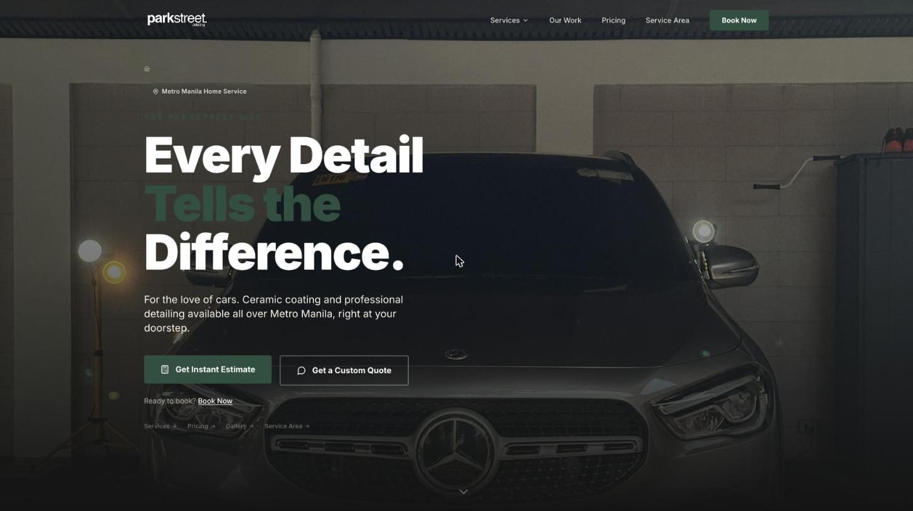

parkstreetdetailing.ph

Client website · Live
Parkstreet Detailing
A luxury car-detailing brand's website with features usually reserved for bigger teams, including live detailer tracking modelled on ride-hailing apps.
- Realtime detailer tracking, location search and SMS alerts
- Full SEO setup with structured data and link previews
- Messenger chat, gallery and real client testimonials
React · Supabase Realtime · Google Maps · Semaphore SMS · Netlify
Visit the live site →